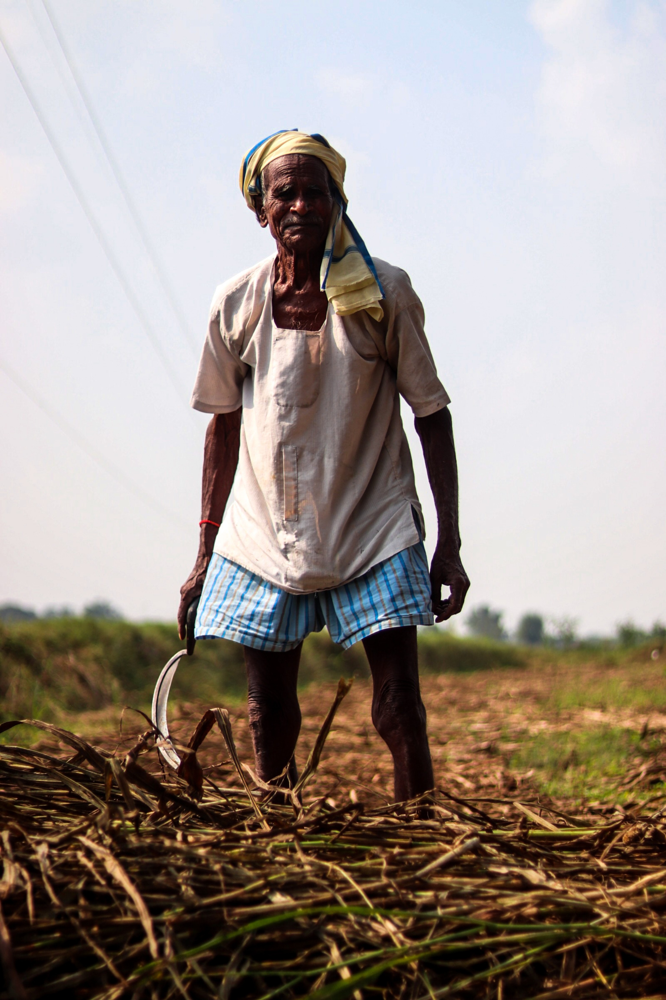

1
Kickstarting the rural economy
Farmlift helps farmers to sell their fresh vegetables in the local market on the daily basis through its platform. Farmers do not have to wait for other farmers to harvest their vegetables in order to arrange transport in a cooperative manner to reduce costs and increase safety. Farmlift helps farmers in earning a small amount everyday which adds up in a significant sum of money at the end of every month. Creating a daily source of income is crucial to farmers who rarely see any continuous income throughout the year, as it provides them with the liquidity which they can spend on daily needs
